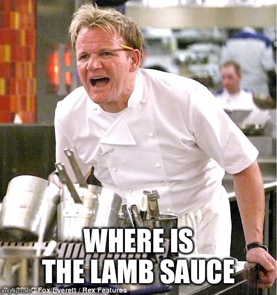

Return to Home Page Here!
For those who do not know this is a picture of world renouned chef Gordon Ramsay well known for his critique of other people's food. In Hell's Kitchen not only does he critique food, he critiques how they work. In this meme someone forgot the most important thing for one of his main Dishes, the LAMB SAUCE!